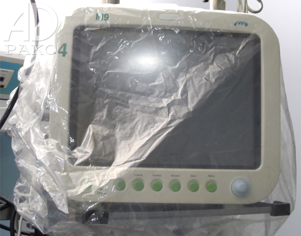

Przedsiębiorstwo Wielobranżowe AD-pako wykonuje produkty z folii LDPE w celu
utrzymania czystości w obiektach służby zdrowia. W naszej ofercie znajdą Państwo pokrowce foliowe na łóżka szpitalne, pokrowce z gumką, opakowania foliowe jak i wiele innych produktów wykonywanych z folii LDPE. Wszystkie cechują się doborem najwyższej jakości kompozytów jak i bardzo wysoką jakością wykonania. Trwałość i niezawodność to główne cechy naszych produktów.
Pokrowiec foliowy na łóżko szpitalne:
Pokrowce używane są do zapobiegania zakażeniom szpitalnym oraz osłaniają przed zabrudzeniami zewnętrznymi. Pokrowiec zabezpiecza łóżko w całości (poręcza, boki wraz z pościelą) co podczas transportu wewnątrzszpitalnego jak i na oddziale w oczekiwaniu na pacjenta zapewnia jego higieniczne utrzymanie. Produkowane są z bezbarwnej folii LDPE i tradycyjny ich rozmiar wynosi: 220x100x50 cm dł./szer./gł. Jest również możliwość dostosowania rozmiaru do Państwa oczekiwań.

Pokrowiec foliowy z gumką na aparaturę medyczną:
Pokrowiec na aparaturę medyczną posiada gumkę wraz ze ściągaczem co umożliwia dokładne dopasowanie go do danego urządzenia. Standardowe rozmiary to: ø60 ; ø80 ; ø100. Wykonany jest z bezbarwnej, miękkiej folii LDPE. Nasza firma jest w stanie dostosować się z rozmiarem do wymagań klienta.
Pokrowiec foliowy na inkubator:
Pokrowce produkowane są z miękkiej, bezbarwnej folii LDPE. Tradycyjny ich rozmiar wynosi: 180x90x60 cm dł./szer./gł. Wielkość ta pozwala na zakrycie i zabezpieczenie całego inkubatora przed zabrudzeniami zewnętrznymi jak i bakteriami.

Worki na odpady medyczne:
Wszystkie worki są wykonane z bardzo trwałej i odpornej na uszkodzenia folii. Gwarantujemy solidną jakość zgrzewu. Grubość, wymiary, kolory na życzenie klienta.
Podkłady/prześcieradła foliowe:
Produkowane są z bezbarwnej folii LDPE ( nie z recyklingu ). Folia jest miękka i dobrze dopasowuję się do materaca. Dostosujemy się z rozmiarem na życzenie klienta.
Zajmujemy się również produkcją pokrowców na:
- odzież
- tapicerkę i krzesła biurowe
- siedzisko fotela dentystycznego
- sprzęt rehabilitacyjny i sportowy
- worki na opony